Carpinterías exteriores
Perfiles de PVC color negro, con paños fijos y hojas practicables o corredizas según proyecto. Doble vidriado hermético para mejores prestaciones térmicas y acústicas.
Música“Bossa Antigua”, Kevin MacLeod
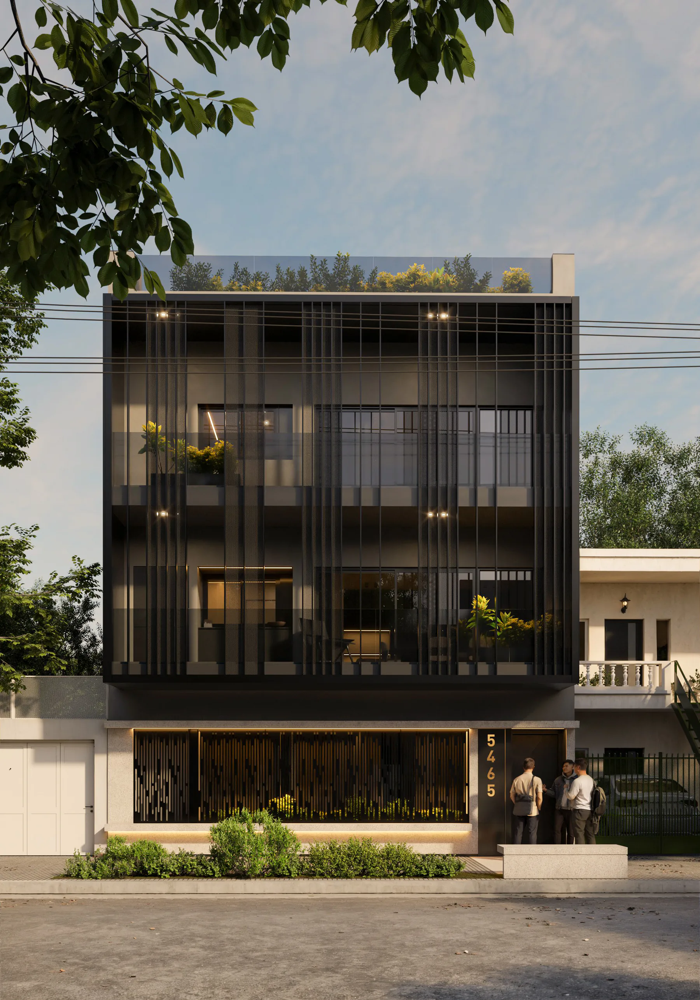
Villa Devoto, Buenos Aires
Tres unidades de arquitectura contemporánea, pensadas para durar y para vivirse todos los días.
Parasoles metálicos verticales ordenan la fachada, filtran la luz y cuidan la privacidad. Carpinterías de PVC negro con doble vidriado hermético completan una envolvente durable.
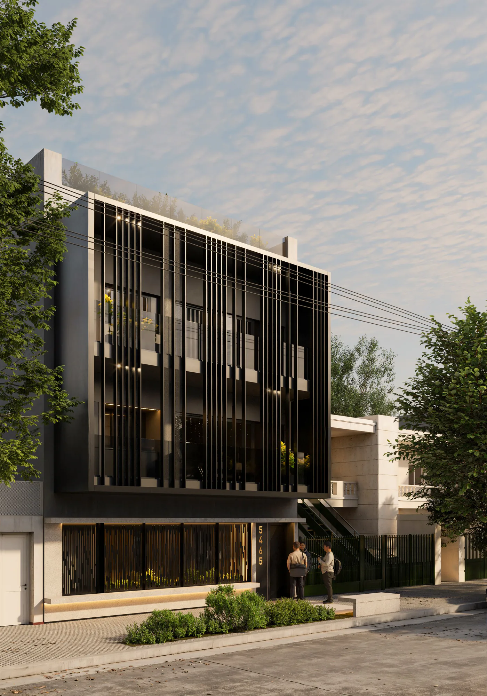
El mobiliario fijo es parte de la arquitectura. Guardado, equipamiento e iluminación se resuelven como un solo sistema en cada ambiente.
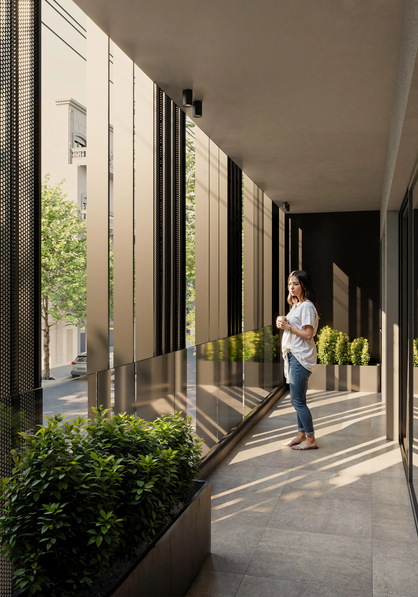
La luz atraviesa la fachada y llega a cada balcón. Las unidades de primer y segundo piso suman parrilla en el balcón o sector de expansión.
Porcelanatos de primera calidad, griferías monocomando y muebles de guardado. Superficies resistentes y fáciles de mantener, pensadas para el día a día.
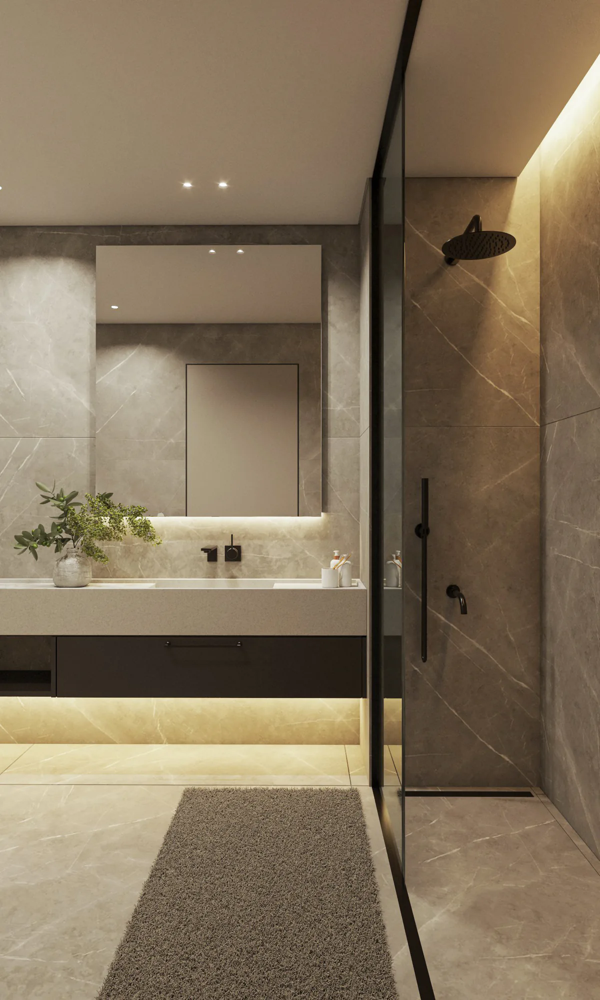
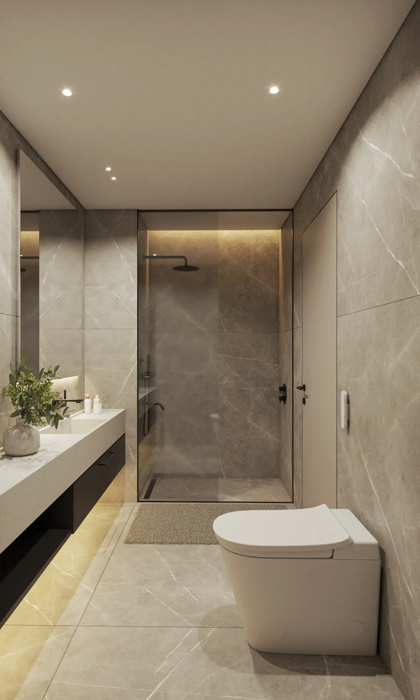
Cocina y comedor comparten un mismo espacio, con mobiliario fijo, iluminación integrada y mesadas de alta resistencia.
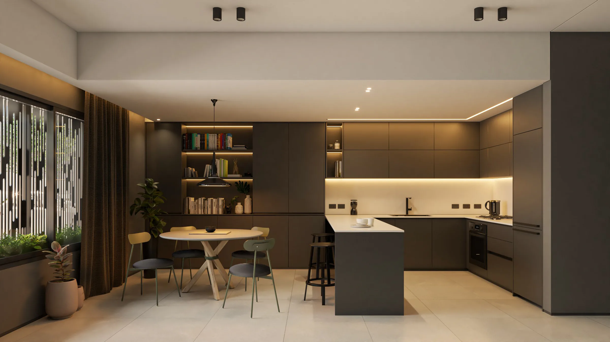
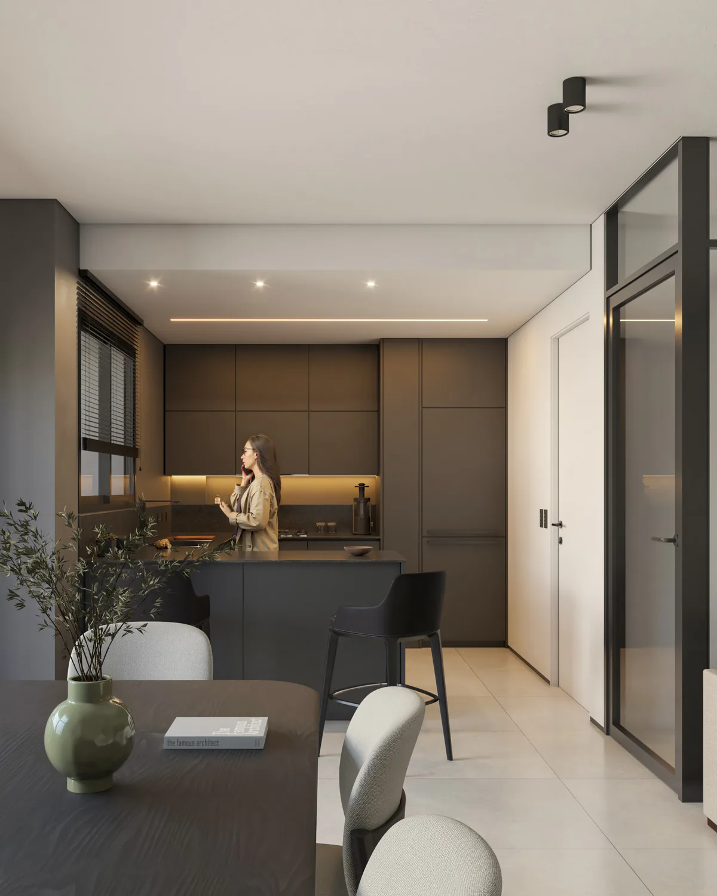
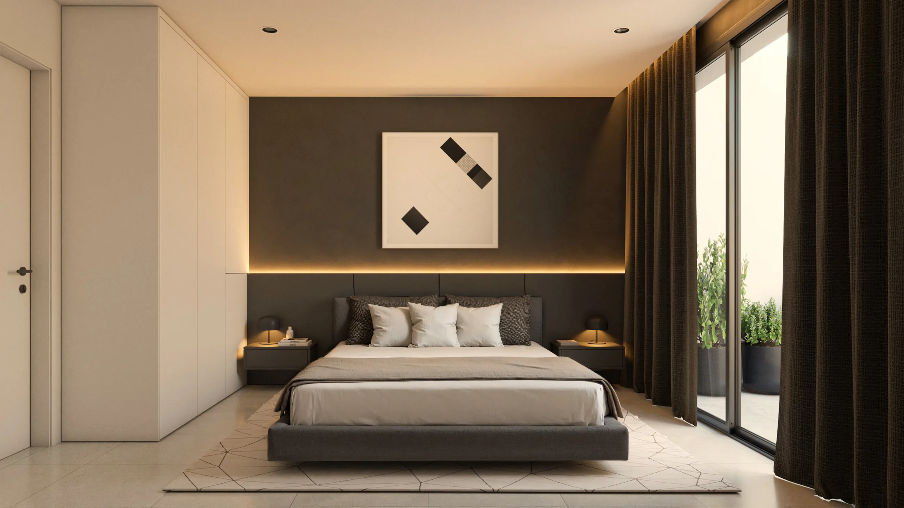
Dormitorios serenos, con luz cálida y salida al exterior. Cabeceras integradas, placares completos y cortineros resueltos en el cielorraso.
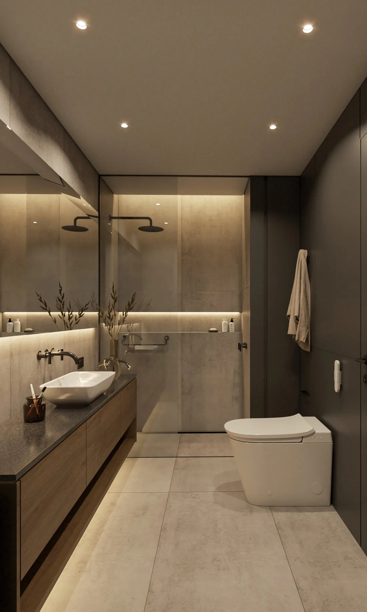
Cada baño y cada toilette mantienen el mismo criterio: artefactos de primera calidad, iluminación arquitectónica y revestimientos de porcelanato.
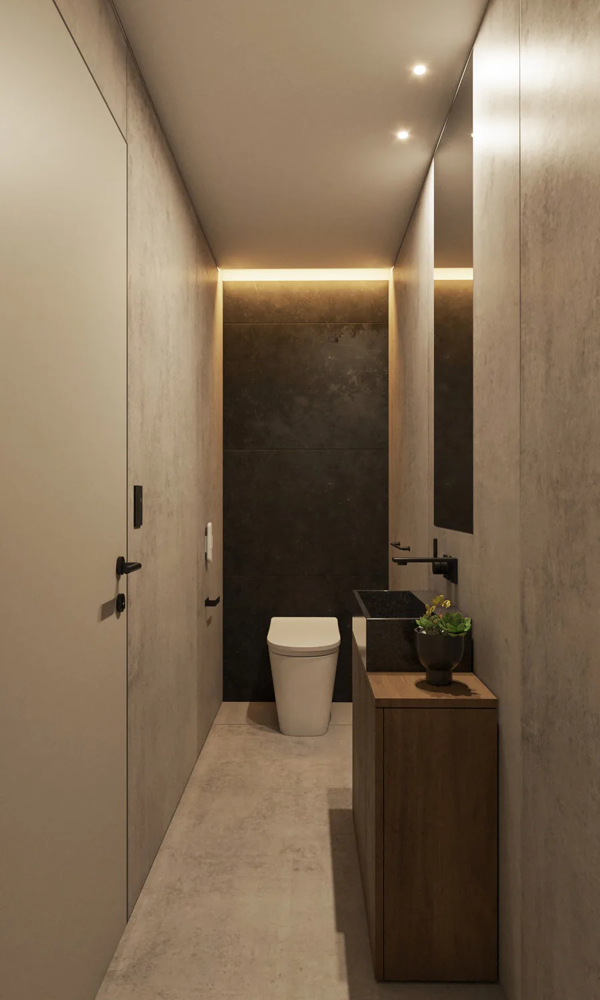
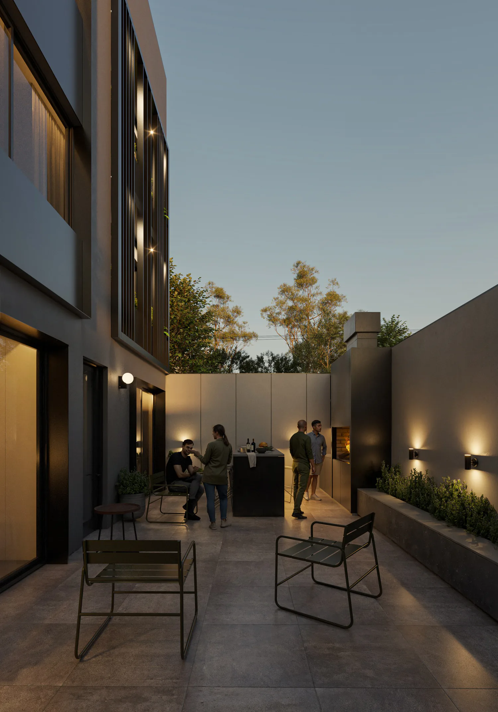
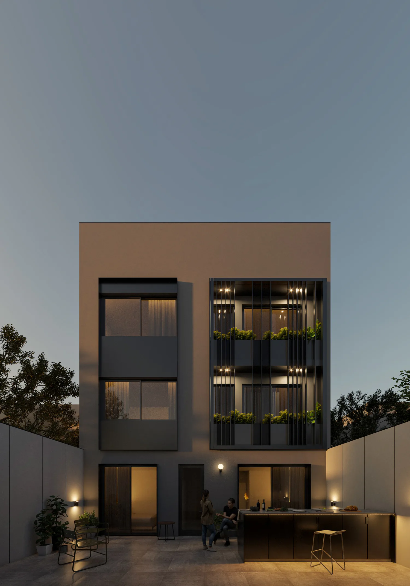
El contrafrente repite el lenguaje de la fachada. El patio de planta baja suma un espacio propio para reunirse al aire libre.
Este dispositivo no permite ver la maqueta 3D. Podés recorrer los planos desde el panel.
Planos interactivos
Arrastrá para girar. Tocá un nivel para ver su plano.
Memoria descriptiva
Una arquitectura contemporánea, durable y de bajo mantenimiento, con especial atención a las carpinterías, los revestimientos y el equipamiento fijo.
Perfiles de PVC color negro, con paños fijos y hojas practicables o corredizas según proyecto. Doble vidriado hermético para mejores prestaciones térmicas y acústicas.
Pisos y paredes con porcelanato de primera calidad. En baños, cocinas y sectores húmedos se priorizan superficies de fácil mantenimiento y alta resistencia.
Suspendidos de placa de yeso, con buñas, encuentros y gargantas. Integran cortineros, iluminación y pases de instalaciones con una terminación continua.
Enlucido de yeso y pintura al látex, con preparación, lijado y las manos necesarias para lograr superficies uniformes.
Puertas de PVC con herrajes y terminaciones coordinadas con la estética general de cada unidad.
Muebles diseñados como parte de la arquitectura interior, buscando continuidad material, optimización del espacio y una imagen integral en cada ambiente.
Frentes e interiores completos, con sectores de guardado, estantes, barrales y cajoneras según diseño y dimensiones disponibles.
Cabeceras integradas al diseño interior de cada dormitorio, con resolución material y dimensiones según cada tipología.
Integrados en todos los ambientes principales y resueltos dentro del cielorraso, para una terminación limpia.
Mobiliario fijo bajo mesada y alacenas, con herrajes de calidad y diseño contemporáneo. La distribución se resuelve según cada tipología.
Silestone, Neolith o material de prestaciones equivalentes. Superficies resistentes, de bajo mantenimiento y estética homogénea.
Monocomando marca FV o Hidromet, o equivalente de similar calidad y prestación, según el diseño de cocinas y baños.
Artefactos sanitarios y accesorios de primera calidad, vanitory o mueble de guardado, espejos y revestimientos de porcelanato.
Las puertas principales de acceso a las unidades incorporan cerraduras inteligentes, para un ingreso contemporáneo y seguro.
Espacio de bicicletero en el subsuelo, con un sector asignado para cada unidad funcional.
Las unidades de primer y segundo piso cuentan con parrilla en balcón o sector de expansión, según la configuración de cada unidad.
Instalación completa según normativa, con tablero seccional por unidad, llaves de línea contemporánea e iluminación técnica integrada.
Previsiones para equipos tipo split en los ambientes indicados, con pases y ubicaciones técnicas según proyecto.
Instalaciones de agua fría, agua caliente y desagües con sistemas aprobados y conforme a normativa.
El mismo criterio de diseño y calidad material del conjunto, con terminaciones resistentes e iluminación arquitectónica.
Las marcas, modelos, colores, medidas y materiales indicados podrán ser reemplazados por otros de calidad y prestación equivalente o superior por razones técnicas, disponibilidad comercial, ajustes de proyecto o requerimientos reglamentarios. La definición final surgirá de la documentación ejecutiva.
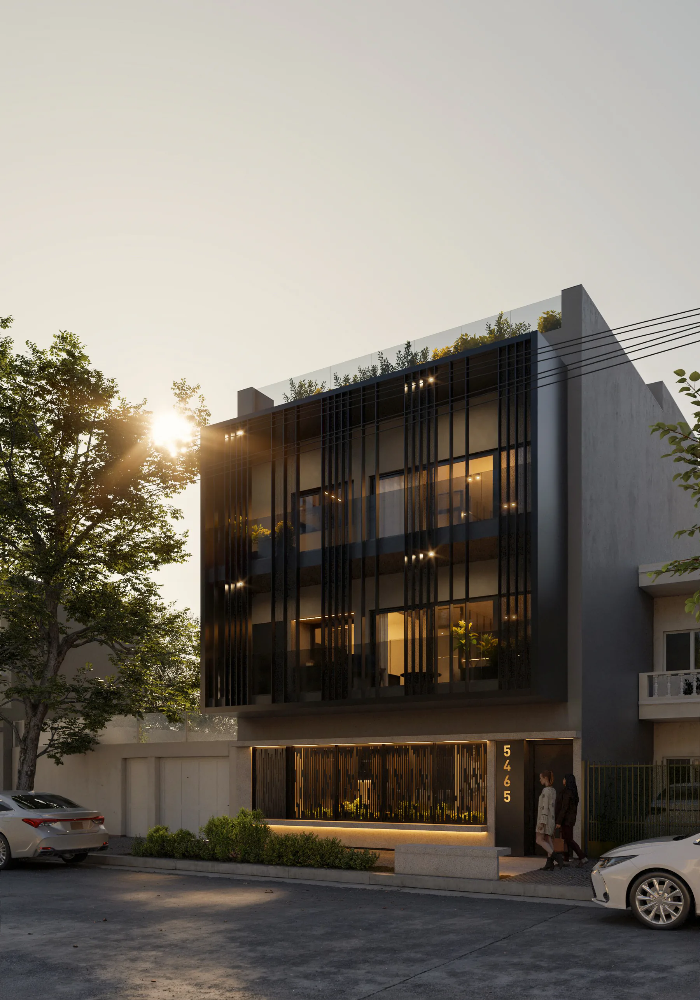
Coordiná una visita o recibí la información completa de cada unidad.
±0,00
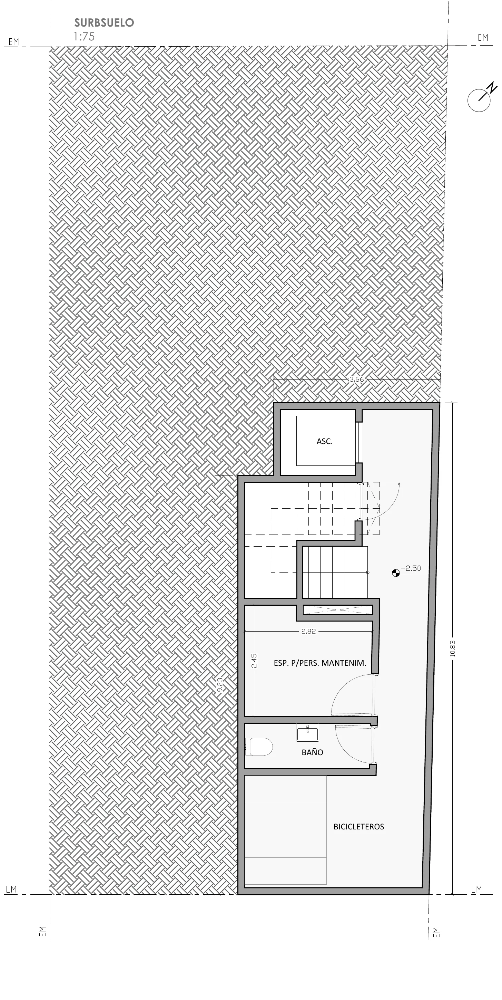
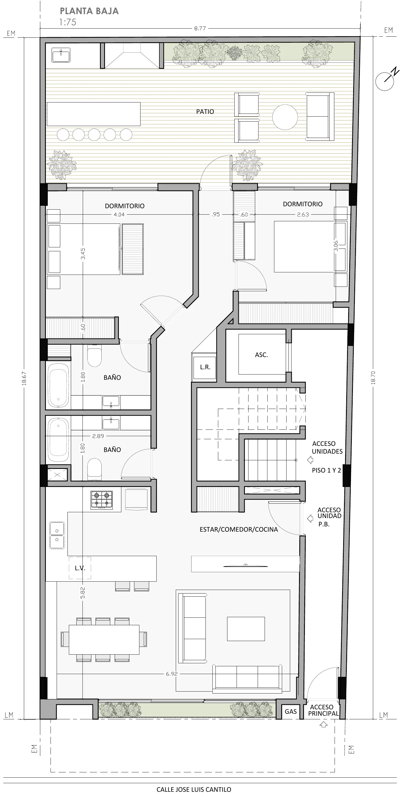
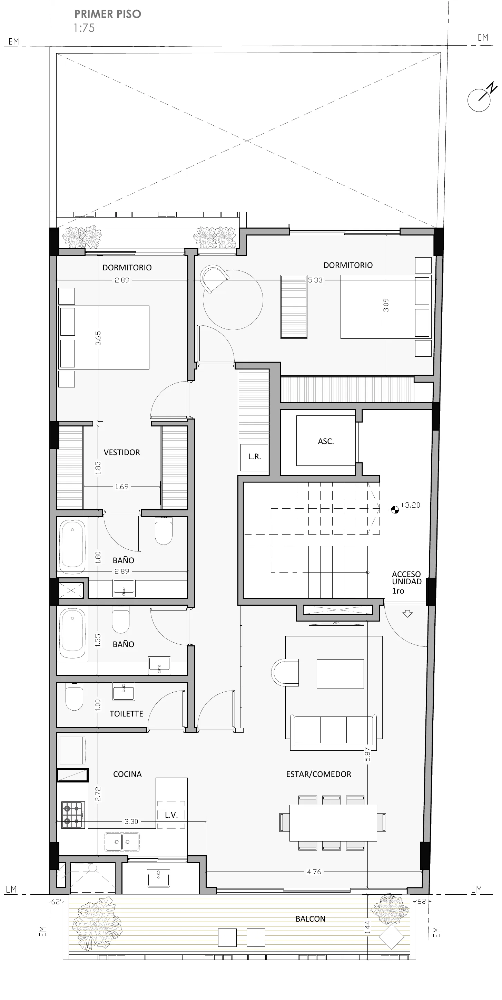
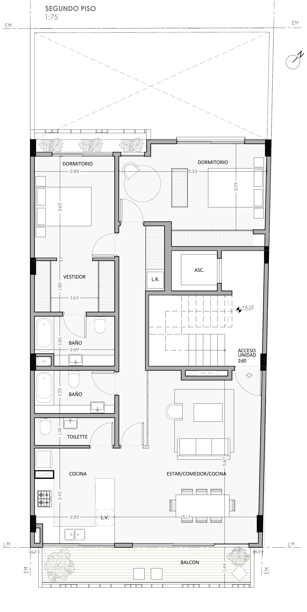
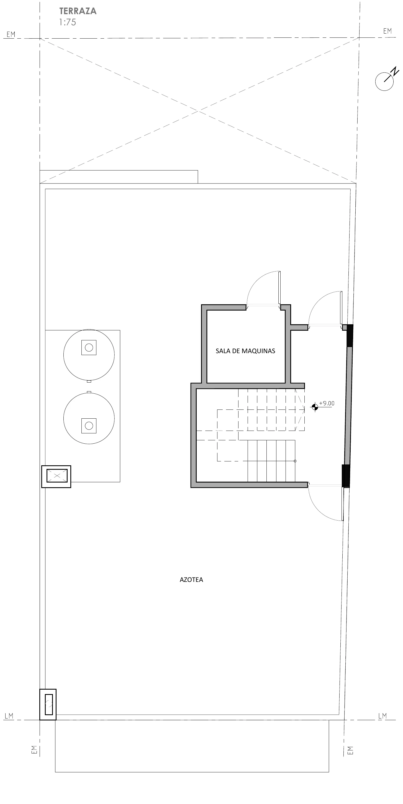